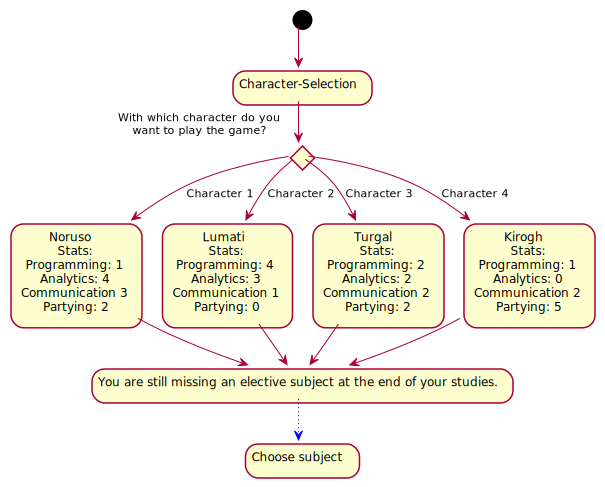
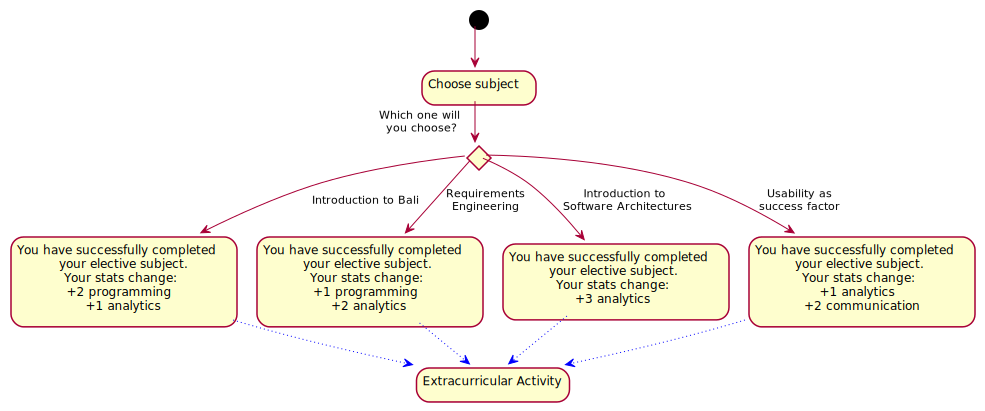
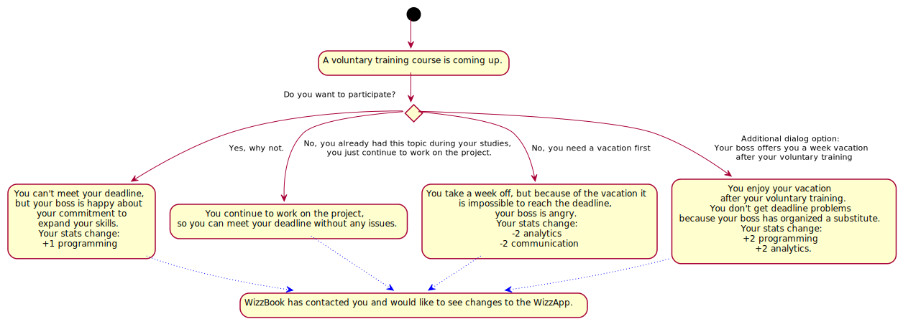
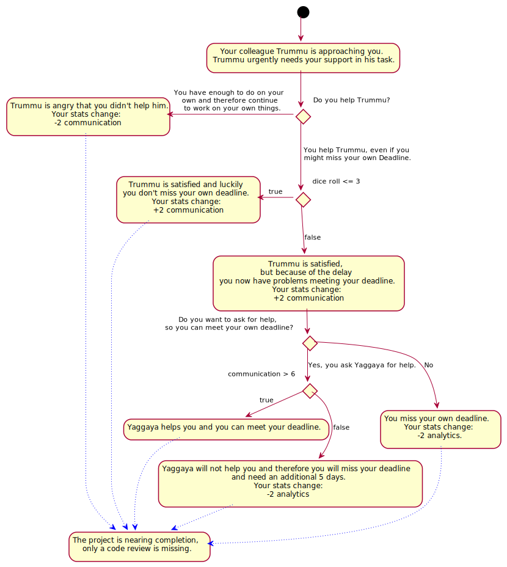

StoryFlow diagram
A rough overview of the decisions occurring within the story. The diagram exclusively depicts the situations in which decisions can be made and the choices to be made in these situations.


Detailed-StoryFlow diagrams
A detailed overview of the individual decisions. The diagrams contain all individual situations with every possible decision and all effects of the individual decisions.







